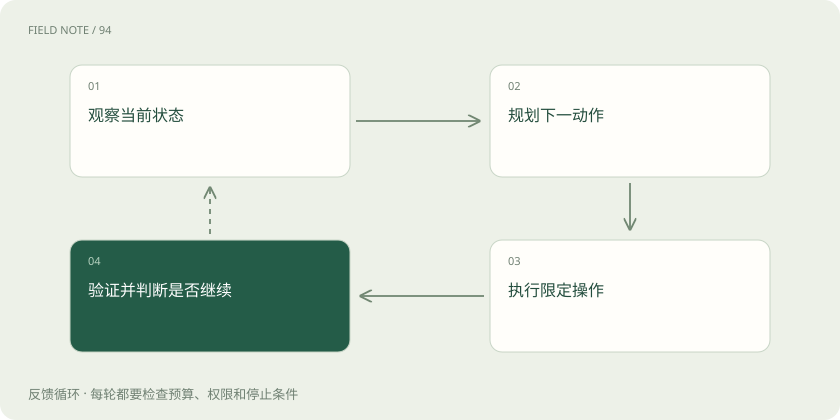
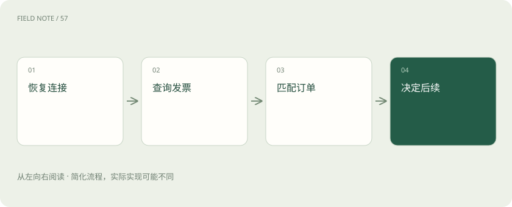
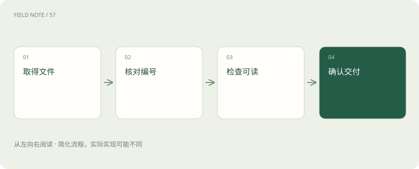

先读哪些知识
先用一个类比理解
类比只帮助建立直觉，不等同于技术的完整机制。
一图看懂

先把目标写成可验收状态
假设用户要求为订单甲生成发票，并把文件交付给自己。目标至少包含订单身份正确、发票确已生成、文件属于该订单以及交付可读取。点击“开票”只是中间动作，按钮变灰也只是局部信号。应把页面动作和业务完成分开记录，否则界面卡顿时很容易把未完成报告为成功。
本站建议在开始前读取订单号、抬头和当前开票状态，形成带时间的基线。若订单已经开票，先查已有发票，而不是重新执行创建。验收标准在执行前确定，可以避免系统在失败后临时降低目标，例如把“已提交申请”改称“已完成开票”。
每次只规划可验证的一步
观测、规划、动作和验证应形成循环。观察订单行之后，计划打开详情；动作完成后，核对详情页订单号，再决定是否进入发票页。长串动作如果中间一步失败，后面的输入可能落到错误页面。循环不要求每次都重新理解全站，而是要求关键状态转换获得新证据。
例如筛选结果刷新时，不应同时排队点击第一行、勾选条款和确认开票。第一行可能随排序变化。先核对订单甲，再打开详情。本站建议给每步记录前置条件和预期变化；条件未满足时停止当前动作，回到观察阶段，而不是依靠多次点击碰运气。
主图展示尚未完成时的控制循环；验证通过后应退出，失败、权限不足或预算耗尽也可以停止，不能为了循环而继续操作。
定位漂移往往来自语义不足
后台表格重新排序、分页或虚拟滚动，会使“第三行的按钮”失去稳定含义。比位置更可靠的是订单号与行内控件的组合。Playwright定位器支持根据角色、文字等信息寻找目标，但如果页面上有多个相同名称，仍需要收窄范围；定位器本身不理解订单业务。
订单甲位于第一页第三行，刷新后移到第二页，旧坐标不能继续用。应重新搜索订单号并核对唯一匹配。若详情页同时出现父订单与子订单编号，也不能只看文本包含关系。本站建议在真正产生副作用之前再次比对完整标识，尤其防止前缀相似的订单被误选。
图解：提交结果不明时

等待应该绑定条件
Playwright官方提供动作前可操作性检查与可重试断言，这能减少元素尚未准备好时的失败。不过元素可以点击，不代表后台数据已经完成更新。固定等待若太短会误判失败，太长则浪费时间；应等待具体结果，如加载状态结束、订单状态更新或下载事件出现。
开票后页面可能先显示申请已接收，再显示处理中。应明确哪一个状态允许继续下载。等待也要有上限，超时后记录最后状态并进入恢复流程。本站建议区分元素等待、网络等待和业务状态等待：网络暂时安静并不能证明财务系统已经完成异步开票，三者不能互相替代。
会话是持续变化的条件
登录态、租户、语言、时区和账号权限都会影响页面含义。订单后台在长任务中可能会话过期，重新登录后又回到默认租户；若直接恢复旧动作，可能在另一家公司的同名订单上操作。浏览器仍然打开，并不意味着原来的业务上下文完整保留。
恢复时应核对账号、租户和订单，而不是只检查是否出现登录页。多标签页还可能共享登录状态，一个标签退出会影响另一个。本站建议把这些上下文作为恢复检查清单的一部分，同时避免在日志里保存会话令牌。需要人工完成的身份验证应交接清楚，不能让模型反复尝试绕过。
副作用需要幂等而非盲重试
打开页面通常容易重试，创建发票则可能产生重复业务记录。真正的幂等性需要业务服务以请求标识识别重复提交，或者依据业务唯一约束阻止重复；仅让智能体记住“我点过了”并不能保证服务器只处理一次。网络超时尤其危险，因为响应丢失时请求可能已经成功。
订单甲点击确认后断网，恢复后先查询开票记录和处理状态。若能找到对应发票，就继续取文件；若无法确认，应报告结果不明并等待核查。本站建议为动作区分只读、可撤销和不可重复类别，分别设置重试策略。不能把浏览器层的自动重试扩展成对所有业务提交的无限重放。
断线恢复从事实重建
检查点应保存目标标识、已验证结果、待核实动作和最近观察时间，而不是只有“执行到第七步”。因为页面、会话和后台状态在断线期间都可能变化。恢复后先建立新观察，再与检查点对照；旧截图用于解释历史，不能作为当前点击依据。
如果记录显示“确认开票已发出、结果未收到”，恢复入口应是查询状态，而非重新确认。若下载已完成但交付失败，可以复用已校验文件。本站建议把恢复设计成独立路径，演练在提交前、提交后和下载中三个位置断线，确认系统能够给出不同处理，而不是统一从头开始。
图解：下载交付验收

验收同时检查正确与遗漏
最终要核对订单甲的发票编号、抬头、文件可读取性和交付结果，还要检查是否误改其他订单。页面出现绿色提示不能覆盖这些检查。对于批量任务，应报告成功集合、失败集合和结果不明集合，保留每个订单的状态依据，而非只给一个总成功率。
本站建议用测试环境覆盖排序变化、重复按钮、处理中超时和响应丢失等场景。观察每种失败是否停止在安全边界，以及人工能否凭记录接管。官方等待机制提供底层支持，订单唯一性、业务幂等与验收集合则属于本站工程设计，不能归因为框架自动具备的能力。
放在一起对比
| 维度 | 能力 | 边界 |
|---|---|---|
| 定位 | 完整订单标识 | 避免行号漂移 |
| 等待 | 业务状态满足 | 可点击不足以证明完成 |
| 重试 | 查询已有副作用 | 超时不等于失败 |
| 恢复 | 重建会话事实 | 旧截图不是当前状态 |
放进真实场景
像仓库交接班：交接的应是哪些订单已核实，而不是上一班鼠标点到了哪里。
别踩这个误区
想一想
开票确认后断网，恢复第一步是什么？
查询目标订单的开票事实，先区分已完成、处理中与结果不明，再决定后续动作。
关联阅读
资料与边界
本文为原创知识讲解。类比和图示经过简化；示例数字不代表实测或报价。整理日期：2026-11-05。文末列出对应技术的原始资料，具体功能与版本支持请以原文为准。